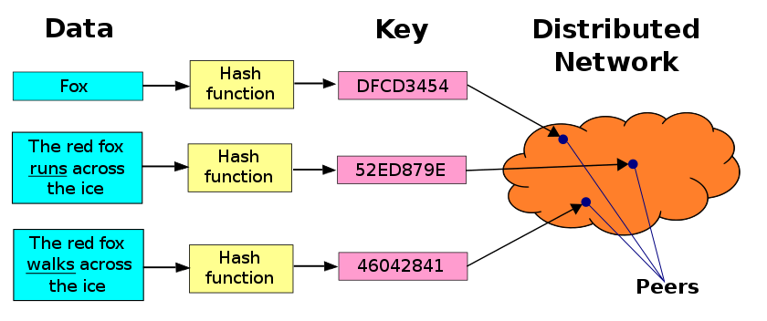
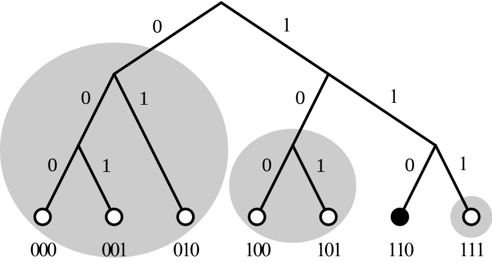

本文主要整理维基百科中英文和百度百科等资料，算是对 DHT 技术做一个综述，基本都是摘自参考资料中的文档。
DHT

分布式哈希表（distributed hash table，缩写DHT）是分布式计算系统中的一类，用来将一个键（key）的集合分散到所有在分布式系统中的节点。这里的节点类似哈希表中的存储位置。分布式哈希表通常是为了拥有大量节点的系统，而且系统的节点常常会加入或离开。
研究分布式哈希表的主要动机是为了开发点对点系统，像是Napster、Gnutella、BitTorrent及Freenet。这些系统使用分散在互联网上的各项资源以提供文件分享服务，特别在带宽及硬盘存储空间上受益良多。
这些系统使用不同的方法来解决如何找到拥有某数据的节点的问题。Napster使用中央的索引服务器：每个节点加入网络的同时，会将他们所拥有的文件列表发送给服务器，这使得服务器可以进行搜索并将结果回传给进行查询的节点。但中央索引服务器让整个系统易受攻击，且可能造成法律问题。于是，Gnutella和相似的网络改用大量查询模式（flooding query model）：每次搜索都会把查询消息广播给网络上的所有节点。虽然这个方式能够防止单点故障（single point of failure），但比起Napster来说却极没效率。
最后，Freenet使用了完全分布式的系统，但它建置了一套使用经验法则的基于键的路由方法（key based routing）。在这个方法中，每个文件与一个键相结合，而拥有相似键的文件会倾向被相似的节点构成的集合所保管。于是查询消息就可以根据它所提供的键被路由到该集合，而不需要经过所有的节点。然而，Freenet并不保证存在网络上的数据在查询时一定会被找到。
分布式哈希表为了达到Gnutella与Freenet的分散性（decentralization）以及Napster的效率与正确结果，使用了较为结构化的基于键的路由方法。不过分布式哈希表也有个Freenet有的缺点，就是只能作精确搜索，而不能只提供部分的关键字；但这个功能可以在分布式哈希表的上层实现。
最初的四项分布式哈希表技术——内容可定址网络（Content addressable network，CAN）、Chord（Chord project）、Pastry（Pastry (DHT)），以及Tapestry (DHT)（Tapestry (DHT)）皆同时于2001年发表。从那时开始，相关的研究便一直十分活跃。在学术领域以外，分布式哈希表技术已经被应用在BitTorrent及CoralCDN（Coral Content Distribution Network）等。
分布式散列表本质上强调以下特性：
- 离散性：构成系统的节点并没有任何中央式的协调机制。
- 伸缩性：即使有成千上万个节点，系统仍然应该十分有效率。
- 容错性：即使节点不断地加入、离开或是停止工作，系统仍然必须达到一定的可靠度。
要达到以上的目标，有一个关键的技术：任一个节点只需要与系统中的部分节点沟通，当成员改变的时候，只有一部分的工作（例如数据或键的发送，哈希表的改变等）必须要完成。
分布式散列表的结构可以分成几个主要的组件。其基础是一个抽象的键空间（keyspace），例如说所有160位长的字符串集合。键空间分区（keyspace partitioning）将键空间分区成数个，并指定到在此系统的节点中。而延展网络则连接这些节点，并让他们能够借由在键空间内的任一值找到拥有该值的节点。
假设键空间是一个160位长的字符串集合。为了在分布式散列表中存储一个文件，名称为filename且内容为data，我们计算出filename的SHA1散列值——一个160位的键k——并将消息put(k,data)送给分布式散列表中的任意参与节点。此消息在延展网络中被路由，直到抵达在键空间分区中被指定负责存储关键值k的节点。而(k,data)即存储在该节点。其他的节点只需要重新计算filename的散列值k，然后提交消息get(k)给分布式哈希表中的任意参与节点，以此来找与k相关的数据。此消息也会在延展网络中被路由到负责存储k的节点。而此节点则会负责传回存储的数据data。
基本上，就是一种映射key和节点的算法以及路由的算法。
其一为保证任何的路由路径长度必须尽量短，因而请求能快速地被完成；
其二为任一节点的邻近节点数目（又称最大节点度（Degree (graph theory)））必须尽量少，因此维护的花费不会过多。
分布式哈希与一致性哈希
分布式哈希和一致性哈希有什么区别呢？lintong 的分布式哈希与一致性哈希 一文对它做了清晰而简洁的解释。
- 分布式哈希: 将哈希表分散在不同的节点上，并且能提供相应的方法来查找， 比如DHT算法
- 一致性哈希: 当节点宕机或者扩容的时候，需要重新哈希，一致性哈希实现的 DHT 避免对大量的数据重新哈希, 比如Chord DHT). 所以一致性哈希是 DHT 的一种实现，避免在节点变化的时候出现的全部重新哈希的现象. 我不知道为什么wikipedia没有列出memcached client中常用的libketama，在我看来它也是一个易于理解的一致性哈希的实现。
其它的 DHT 的分区实现(Keyspace partitioning)还有:
- Rendezvous hashing: 最高随机权重哈希。每个client都会获得服务节点相同的指示符
{S1, S2, ..., Sn }， 对于键k, client使用相同的哈希函数计算服务节点的权重w1 = h(S1, k), w2 = h(S2, k), ..., wn = h(Sn, k)，然后总是选择最高权重的节点。 - Locality-preserving hashing: 相近的键总是指派给相近的对象。
Kademlia算法
Kademlia是一种通过 DHT 的协议算法，它是由Petar和David在2002年为P2P网络而设计的。Kademlia规定了网络的结构，也规定了通过节点查询进行信息交换的方式。
Kademlia网络节点之间使用UDP进行通讯。参与通讯的所有节点形成一张虚拟网（或者叫做覆盖网）。这些节点通过一组数字（或称为节点ID）来进行身份标识。节点ID不仅可以用来做身份标识，还可以用来进行值定位（值通常是文件的散列或者关键词）。
当我们在网络中搜索某些值（即通常搜索存储文件散列或关键词的节点）的时候，Kademlia算法需要知道与这些值相关的键，然后逐步在网络中开始搜索。每一步都会找到一些节点，这些节点的ID与键更为接近，如果有节点直接返回搜索的值或者再也无法找到与键更为接近的节点ID的时候搜索便会停止。
这种搜索值的方法是非常高效的：与其他的分布式哈希表的实现类似，在一个包含n个节点的系统的值的搜索中，Kademlia仅访问O(log(n))个节点。
Kademlia简称为Kad,它使用了一个精妙的算法，来计算节点之间的"距离" (这里的距离不是地理空间的距离，而是路由的跳数)，这个算法就是XOR操作(异或)，因为这个操作和距离的计算类似：
(A ⊕ B) == (B ⊕ A): XOR 符合“交换律”，具备对称性。A和B的距离从哪一个节点计算都是相同的。(A ⊕ A) == 0: 反身性，自己和自己的距离为零。(A ⊕ B) > 0: 两个不同的 key 之间的距离必大于零。(A ⊕ B) + (B ⊕ C) >= (A ⊕ C): 三角不等式, A经过B到C的距离总是大于A直接到C的距离。
(精妙啊!是如何想起和距离计算联系在一起的？)
Kad使用160位的哈希算法（比如 SHA1），完整的 key 用二进制表示有160位，这样可以容纳2160个节点，可以说是不计其数了。
Kad把 key 映射到一个二叉树，每一个 key 都是这个二叉树的叶子。
映射规则
- 先把 key 以二进制形式表示，然后从高位到低位依次处理。
- 二进制的第 n 个位就对应了二叉树的第 n 层
- 如果该位是1，进入左子树，是0则进入右子树（这只是人为约定，反过来处理也可以）
- 全部位都处理完后，这个 key 就对应了二叉树上的某个叶子
二叉树的拆分规则

对每一个节点，都可以按照自己的视角对整个二叉树进行拆分成最多160个子树。
拆分的规则是：先从根节点开始，把不包含自己的那个子树拆分出来；然后在剩下的子树再拆分不包含自己的第二层子树；以此类推，直到最后只剩下自己。
Kad 默认的散列值空间是 m=160（散列值有 160 bit），因此拆分出来的子树最多有 160 个（考虑到实际的节点数远远小于2160，子树的个数会明显小于 160）。
对于每一个节点而言，当它以自己的视角完成子树拆分后，会得到 n 个子树；对于每个子树，如果它都能知道里面的一个节点，那么它就可以利用这 n 个节点进行递归路由，从而到达整个二叉树的任何一个节点。
拆子树
每个节点在完成子树拆分后，只需要知道每个子树里面的一个节点，就足以实现全遍历。但是考虑到健壮性（节点可能宕机或者退出），光知道一个显然是不够的，需要知道多个才比较保险。
所以 Kad 论文中给出了一个K-桶（K-bucket）的概念。也就是说：每个节点在完成子树拆分后，要记录每个子树里面的 K 个节点。这里所说的 K 值是一个系统级的常量。由使用 Kad 的软件系统自己设定（比如 BT 下载使用的 Kad 网络，K 设定为 8）。
K 桶其实就是路由表。对于某个节点而言，如果以它自己为视角拆分了 n 个子树，那么它就需要维护 n 个路由表，并且每个路由表的上限是 K。
说 K 只是一个上限，是因为有两种情况使得 K 桶的尺寸会小于 K:
- 距离越近的子树就越小。如果整个子树可能存在的节点数小于 K，那么该子树的 K 桶尺寸永远也不可能达到 K。(这是由于K桶对应的距离越近，节点数越少)
- 有些子树虽然实际上线的节点数超过 K，但是因为种种原因，没有收集到该子树足够多的节点，这也会使得该子树的 K 桶尺寸小于 K。
如果选择这 K 个节点呢？
Kademlia选择把那些长时间在线的节点存入K桶，这一方法增长了未来某一时刻有效节点的数量，同时也提供了更为稳定的网络。当某个K桶已满，而又发现了相应于该桶的新节点的时候，那么，就首先检查K桶中最早访问的节点，假如该节点仍然存活，那么新节点就被安排到一个附属列表中（作为一个替代缓存）.只有当K桶中的某个节点停止响应的时候，替代cache才被使用。换句话说，新发现的节点只有在老的节点消失后才被使用。
Kademlia协议
Kademlia协议共有四种消息。
- PING消息: 用来测试节点是否仍然在线。
- STORE消息: 在某个节点中存储一个键值对。
- FIND_NODE消息: 消息请求的接收者将返回自己桶中离请求键值最近的K个节点。
- FIND_VALUE消息: 与FIND_NODE一样，不过当请求的接收者存有请求者所请求的键的时候，它将返回相应键的值。
每一个RPC消息中都包含一个发起者加入的随机值，这一点确保响应消息在收到的时候能够与前面发送的请求消息匹配。
定位节点
节点查询可以异步进行，也可以同时进行，同时查询的数量由α表示，一般是3。
- 由查询发起者从自己的k-桶中筛选出若干距离目标ID最近的节点，并向这些节点同时发送异步查询请求；
- 被查询节点收到请求之后，将从自己的k-桶中找出自己所知道的距离查询目标ID最近的若干个节点，并返回给发起者；
- 发起者在收到这些返回信息之后，更新自己的结果列表，再次从自己所有已知的距离目标较近的节点中挑选出若干没有请求过的，并重复步骤1；
- 上述步骤不断重复，直至无法获得比查询者当前已知的k个节点更接近目标的活动节点为止。
- 在查询过程中，没有及时响应的节点将立即被排除；查询者必须保证最终获得的k个最节点都是活动的。
定位资源
通过把资源信息与键进行映射，资源即可进行定位，杂凑表是典型的用来映射的手段。由于以前的STORE消息，存储节点将会有对应STORE所存储的相关资源的信息。定位资源时，如果一个节点存有相应的资源的值的时候，它就返回该资源，搜索便结束了，除了该点以外，定位资源与定位离键最近的节点的过程相似。
考虑到节点未必都在线的情况，资源的值被存在多个节点上（节点中的K个），并且，为了提供冗余，还有可能在更多的节点上储存值。储存值的节点将定期搜索网络中与储存值所对应的键接近的K个节点并且把值复制到这些节点上，这些节点可作为那些下线的节点的补充。另外还有缓存技术。
加入网络
- 新节点A必须知道某个引导节点B，并把它加入到自己相应的K-桶中
- 生成一个随机的节点ID,直到离开网络，该节点会一直使用该ID号
- 向B（A目前知道的唯一节点）发起一个查询请求（FIND_NODE），请求的ID是自己（就是查询自己）
- B收到该请求之后，会先把A的ID加入自己的相应的 K-桶中。并且根据 FIND_NODE 请求的约定，B会找到K个最接近 A 的节点，并返回给 A
- A收到这K个节点的ID之后，把他们加入自己的 K-桶
- 然后A会继续向刚刚拿到的这批节点(还未发送过请求的节点)发送查询请求（协议类型 FIND_NODE），如此往复，直至A建立了足够详细的路由表。
- 这种“自我定位”将使得Kad的其他节点（收到请求的节点）能够使用A的ID填充他们的K-桶，同时也能够使用那些查询过程的中间节点来填充A的K-桶。这已过程既让A获得了详细的路由表，也让其它节点知道了A节点的加入
kad在p2p网络中的应用
Kademlia可在文件分享网络中使用，通过制作Kademlia关键字搜索，我们能够在文件分享网络中找到我们需要的文件以供我们下载。由于没有中央服务器存储文件的索引，这部分工作就被平均地分配到所有的客户端中去：
假如一个节点希望分享某个文件，它先根据文件的内容来处理该文件，通过运算，把文件的内容散列成一组数字，该数字在文件分享网络中可被用来标识文件。这组散列数字必须和节点ID有同样的长度，
然后，该节点便在网络中搜索ID值与文件的散列值相近的节点，并把它自己的IP地址存储在那些搜索到的节点上，也就是说，它把自己作为文件的源进行了发布。正在进行文件搜索的客户端将使用Kademlia协议来寻找网络上ID值与希望寻找的文件的散列值最近的那个节点，然后取得存储在那个节点上的文件源列表。
由于一个键可以对应很多值，即同一个文件可以有多个源，每一个存储源列表的节点可能有不同的文件的源的信息，这样的话，源列表可以从与键值相近的K个节点获得。
文件的散列值通常可以从其他的一些特别的Internet链接的地方获得，或者被包含在从其他某处获得的索引文件中。
文件名的搜索可以使用关键词来实现，文件名可以分割成连续的几个关键词，这些关键词都可以散列并且可以和相应的文件名和文件散列储存在网络中。搜索者可以使用其中的某个关键词，联系ID值与关键词散列最近的那个节点，取得包含该关键词的文件列表。由于在文件列表中的文件都有相关的散列值，通过该散列值就可利用上述通常取文件的方法获得要搜索的文件。